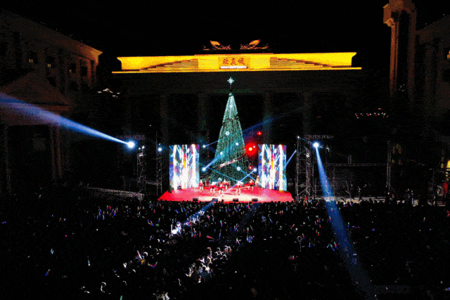
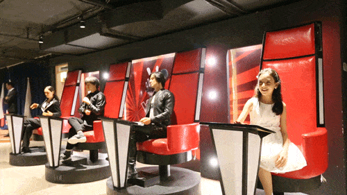
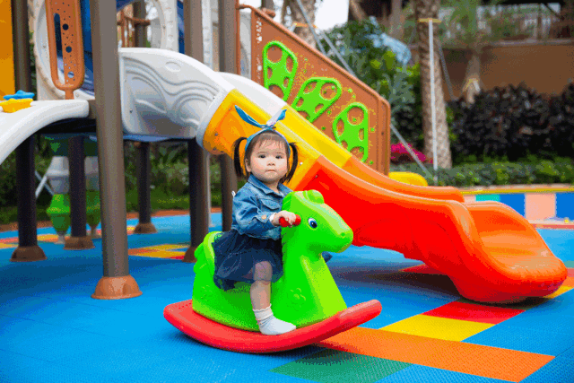
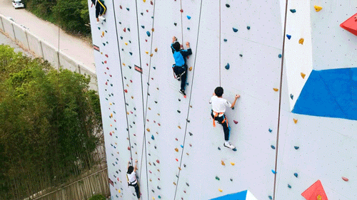

距离2020只有21天了！
想好去哪里跨年了吗？
不想窝在家里看跨年晚会，聚会轰趴又过时
那就来

狮子城&宙斯文化
再度联合打造の
狮子城“放肆玩”
2020project x vol.2 闪电计划跨年嘉年华

燥一个绝对不一样的夜
2019年12月31日
在狮子城约定你！
这里有燥不停的DJ和乐队
看不厌的街舞比赛
逛不完的潮流文化街
玩不腻的狮子城独家潮馆
......
这场超全的跨年派对
绝对让你收获满满！

是不是已经迫不及待想来玩了
别急，马上给你安排最新的独家剧透！
闪电计划摇滚电音盛宴

酷炫的高科技舞台
不间断的劲歌热舞
rapper、摇滚乐队还有电音
越夜越美丽，诱惑根本无法抵挡
让人简直能再嗨三天三夜！

4组重量级DJ大咖
FAder、YOUNG 、Vina-s、A&M、

高能来袭!!!
为大家现场打碟
跟随现场氛围即时变换音乐
情绪被理解的感觉简直不能更圆满

疯教授、阿童木乐队倾情演唱
跟随他们的歌声把所有的烦恼全部丢掉就好


最强嘻哈厂牌GAS
说歌手AKA闻西也会来噢
rapper表演一定也是能躁动你每个细胞


闪电计划跨年音乐大轰趴
从2019嗨到2020，Are you ready？

带上亲朋好友和最爱的人
一起大声跨年倒数的感觉真的很美好~
这次摇滚电音盛宴
光看这阵容就真的酷到没朋友
01

VOLTAGE BASS 厂牌签约艺人
DTB PARTYMA主理人
多次与全球TOP百大DJ/知名RAP SUPER合作
FADER的现场总会给你带来不一样的冲击和各式各样的惊喜
多重身份给予了多重创作灵感
让这位深受北美音乐文化熏陶的中国音乐怪才备受关注

广州达人 DJ YOUNG
曾多次参加各种大型音乐节担任主场DJ
对派对文化的深度参与了解
不仅善于运用经典
更是带领音乐潮流的尖端
灵活掌控，从不拘泥！
DJ Vina-S，亚洲超人气Dj
全中国身材最火辣、最性感的Raper
被称为最阳光Party Dj...
更是大受潮牌运动品牌球鞋活动喜爱的新生代DJ.健身女神.
从2016年开始Vina-S这颗冉冉上升的新星
在整个亚洲都有越来越高到人气
在中国更是引领时尚风向的音乐制作人

A&M
她是现代时尚潮流下的一只DJ&MC魔女
她艳丽的外表下蕴含着气势磅礴的力量
在舞台上席卷着人们律动的血液
IMF厦门超级音乐节特邀嘉宾
同世界百大dj同台合作演出
风格：Hardstyle、PSY、EDM、Bass.
02

阿童木乐队
成军九年，狂噪十年
参加各大小战役上千场
流汗不止，泪湿无数！摇滚，何止于此?
2016年“我要上迷笛”华南赛区总冠军
登上深圳迷笛音乐节唐舞台。
2017年发行第一张专辑《你的曲调》
并完成全国19城巡演

疯教授
成立于2014年
深受red hot chili peppers的音乐风格影响
把乐队的风格定义成funk rock 与rap rock
主要原创作品有
《神笔马良》《嘿、别走开》
《城市之间》《我们》等
03

2019年中国新说唱：全国入围选手
2019年麦王争霸粤语好声音总决赛：第五名
2018年中国有嘻哈：全国70强
2018年珠海流行歌唱比赛：亚军
2017年东莞嘻哈文化节作品赛：季军
2016年铁麦IRON MIC battle比赛：亚军
2014年佛山REAL VOICE：亚军
罗马舞斗士
荣耀之战●街舞挑战赛
罗马舞斗士·荣耀之战 街舞挑战赛
以荣耀之名，集结街舞界各路神仙
2对2的战场，谁才是舞林王者？
欢迎报名，一起来battle！


现场不仅有炸燃全场的专业街舞选手
更有的大咖裁判现场 show case
还有神秘嘉宾来袭！
活脱脱的大型追星现场
怎么少了迷弟迷妹们呢
赶紧走起~

团体:S.T.O. CREW /
EVENTS:
2013年 荷兰world bboy classic中国赛区冠军
2014 年 DANCE@LIVE CHINA BREAKING单人冠军
2014年 R16国际街舞挑战赛瑞士团体冠军
2015 韩国街舞国际大赛R16中国赛区团队冠军
2016 澳洲DESTRUCTIVE 冠军
2016 中国赛区B.O.T.Y冠军

Shelly
所属舞团：From Waacksco/Disco Woogie
惠州Waacking文化推广者
2015年Skip this level vol.2 Freestyle 3VS3 冠军
2015惠州第六届街舞大赛舞林大会Freestyle 冠军
2016年惠州我为潮狂vol.1Freestyle 2on2 冠军
2017年战地为王freestyle 2on2亚军
2018年FunkSeason惠州赛区FUNKMUSIC 2on2 冠军
2018年潮流舞惠vol.6 Freestyle 2on2 冠军
2019年方直广场躁动基因Freestyle 2on2冠军
TOUCHTEAM成员
舞蹈风格：Hiphop/Free style
2019年 法国巴黎 fusionconcept freestyle 8强 2019年 红色风潮 hiphop亚军
2019年 中国首届beatbox &dance 站前赛 freestyle 冠军
2017&2018年 舞魂街舞大赛 hiphop亚军
2016年 顺德一舞倾城街舞大赛freestyle 3on3冠军 2015年HipHop达人全国街舞挑战赛总决赛HipHop-冠军
2012年 Red Bull Hit Top红牛街舞大赛Hip-Hop冠军
2013年 全国大赛Who is best hip-hop四强
无限融合潮流文化街
2020狮子城还要送你一份硬核新年大礼
真接在轰趴现场
搭一条潮流文化街(gai)
街拍、打卡、游戏
能逛，能玩，能买，能尬舞

（实物请以现场为准）
惠州所有的潮流元素都在这里了
让你一次嗨个够！
2020“爱你爱你”告白气球专区
2020，爱你爱你
在这特别的一年到来之前
来场说走就走的“闪恋”吧！
巨型的告白气打卡专区已 stand by


（实物请以现场为准）
一场盛大的告白仪式等你开启
约上心仪的ta
告白吧！
狮子城“无关卡”跨年夜
除此之外
狮子城还是个大型的游玩基地
N个独家潮馆等你来翻牌！
跨年夜更多优惠，让你尽情放肆玩!

不止广场上有表演
海洋世界的表演同样精彩
美人鱼剧场、海狮欢乐秀精彩纷呈

海底隧道、水母万花筒
让你置身海底

难得的假期还不去做些有趣、刺激的事？
老司机们可以把卡丁车安排起来了！

让人肾上腺激素飙升的刺激体验
在转弯漂移中感受速度的魅力

朋友圈的小姐妹去哪拍的那么多美照？
别担心
来网红打卡街，你的照片绝对赢
各种让你假装在异域的建筑背景衬托你的美
出大片还不是分分钟的事？

汉莎蜡像馆让你追星零距离
在惠州就能看遍全球大明星

带小朋友来的大大们不用担心小朋友没得玩
奇奇之家的七彩泡泡池
手摇船、步行球
都让你们的亲子时光温馨到不行

喜欢冒险的大朋友小朋友还能来一场
攀岩亲子赛
攀登顶峰的刺激保证你玩了还想玩

英雄出击·真人CS
足足5000㎡+的超大室内场地任你奔跑
即使外面刮风下雨、打雷暴晒也根本没在怕的！

想感受一回现场版的《红海行动》《战狼》？
就来狮子城英雄出击·真人CS馆吧！
火爆全球恐怖真人鬼屋藤松鬼校首登惠州
鬼门大开，邀你来闯

专业的NPC，恐怖离奇的故事情节
开启恐怖之旅与角色扮演的真实体验

打破以往常规模式
打造全新4D沉浸式感官体验
挑战你的感官极限


玩乐怎么能少了吃？
广式小吃、潮汕汤粉面、客家小吃、
日韩泰料理一应俱全，满足各种口味~

记得带上你的胃哦~~
国际顶尖马术明星阵容
环球1000+场好评演出
15+世界零差评节目
来这里就能体验世界级的马戏精彩
记得屏住呼吸别眨眼睛
准备尖叫着进入这个不可思议的奇幻世界吧

空中飞人、惊险飞轮、空中绸吊、小狗运动会
魔术表演、热辣劲舞、小丑互动…

节目精彩到掌声停不下来！！
多媒体水秀每天准时上演，音乐+唯美喷泉
是几乎所有游客的必备打卡项目
来狮子城的你要看准表演时间了哦~

无法抗拒的水花魅力，只要靠近就能收获开心。
20:00，“分享快乐”主题汇演
带给你最震撼、最劲爆的派对体验


3D墙体投影、3D水幕
动感舞蹈、人偶互动
这是一场高科技和歌舞的完美融合，绝对不能错过哦！

特殊的日子，总需要仪式感提醒我们
时间和身边人的重要性
今年的跨年 仪式感当然也不能少
好的结尾 新的开始 来年才有更好的期待
所以这场超燃超有仪式感的闪电计划跨年嘉年华
就千万不能错过！
抓紧时间买票了喂！

购票信息
98元/人

长按二维码进入购票页面

——敲黑板，划重点——

以后找咱导航“狮子城”就到啦！！
以下路线指引请收好！
∨
惠州狮子城
地址：惠州市惠城区金龙大道99号
电话：0752-2888688
客服在线时间：10:00-12:00,13:30-21:00
园区营业时间：10:00-21:00
注意：
奇奇欢乐谷（1号馆）（待开放）
婚博艺术中心（2号馆）营业时间段：10:00-21:00
精灵乐园（3号馆）
一层 海洋世界 营业时间段：10:00-19:00
二层 美食天地 营业时间段：10:00-21:00
主题影城（4号馆）
一层 格林披治卡丁车馆营业时间段：10:00-21:00
二层 英雄出击·真人CS馆营业时间段：10:00-21:00
藤松鬼校 营业时间段：10:00-21:00
奇奇主题酒店 营业时间段：餐厅07:30-21:00、客房24小时营业
奇奇之家 营业时间段：儿童游玩基地、水上娱乐区、攀岩区10:00-21:00
花车 营业时间段：10:00-21:00
胜利广场多媒体水秀：
第一场：多媒体水秀（11:00-11:15）
第二场：多媒体水秀（14:00-14:15）
第三场：多媒体水秀（16:00-16:15）
第四场：多媒体水秀（18:00-18:15）
第五场：多媒体水秀（19:00-19:40）
海狮欢乐秀剧场：11:00，14:00，16:00，17:30
美人鱼剧场表演：11:30，14:30，16:30，18:00
狮子城大马戏：平日16:00；周末16:00，19:30；法定节假日10:30，16:00，19:30
路线指引：
1、自驾导航“狮子城”即到
2、惠城区可乘坐30路公交车至“欧美城”站下
温馨提示：为方便出行，建议可滴滴或搭乘公交前往。另园区禁止携带外带食品进园，请游客朋友们注意~
惠州狮子城出品
- THE END-